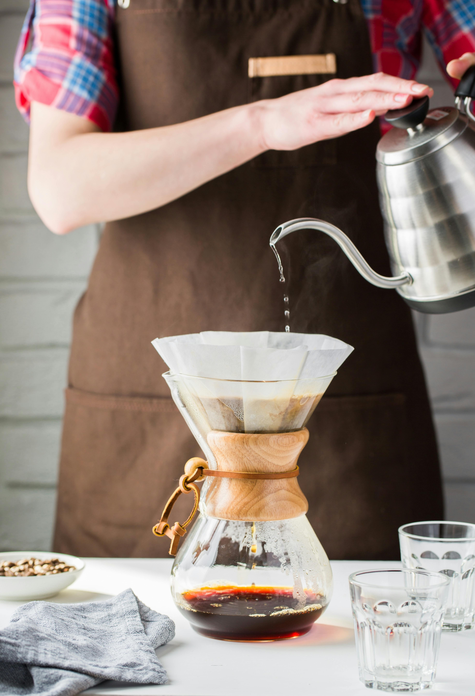
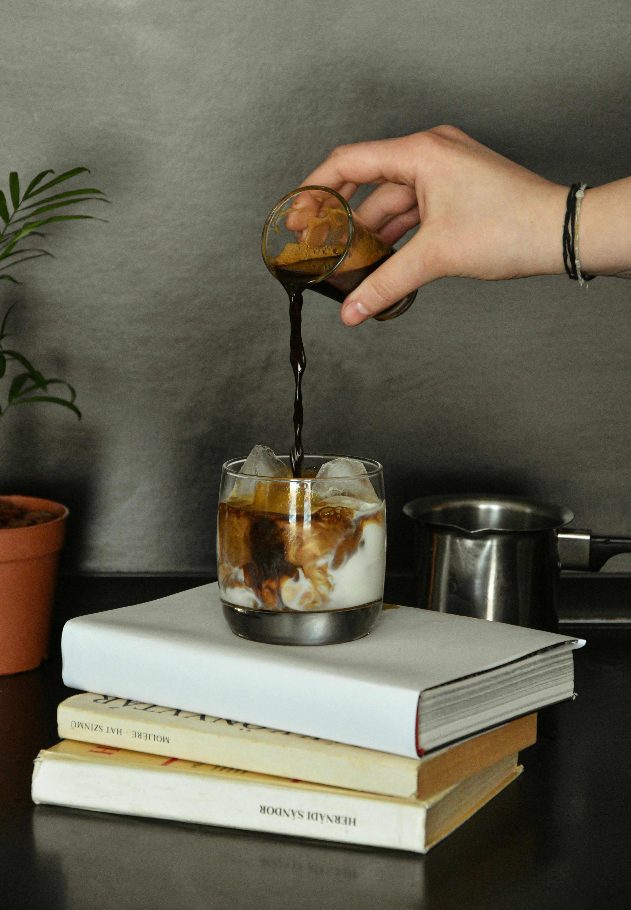
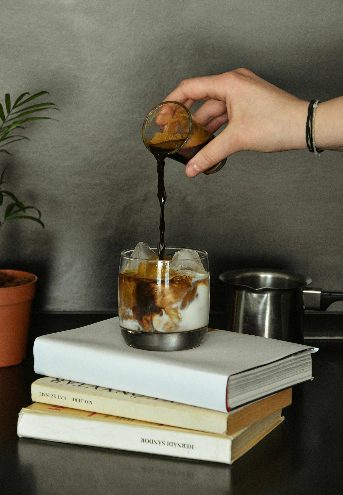
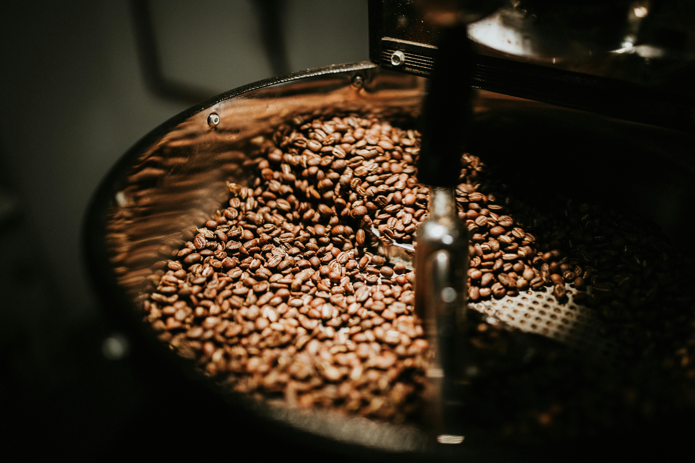
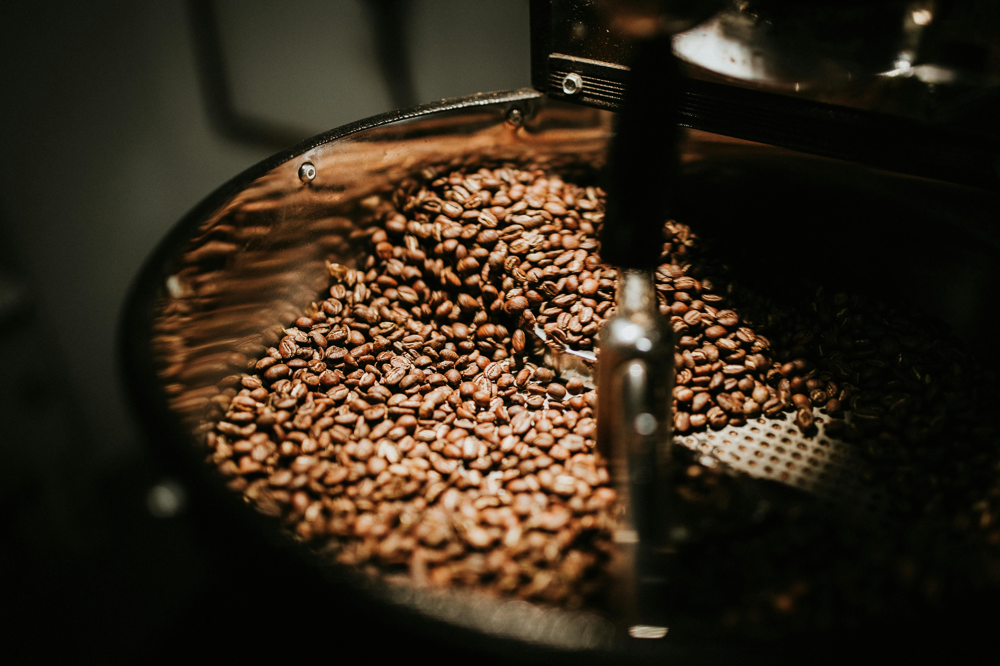

Nuestros productos

Café Arábica Selecto
Grano entero o molido, tostado medio con notas a cacao y caramelo. Perfecto para espresso o filtrado.

Blend Sierra 500g
Tueste fresco, molienda personalizada y empaque con válvula para conservar su aroma natural.
- Origen único 1,800 msnm
- Tueste artesanal
- Envío nacional

 

 
